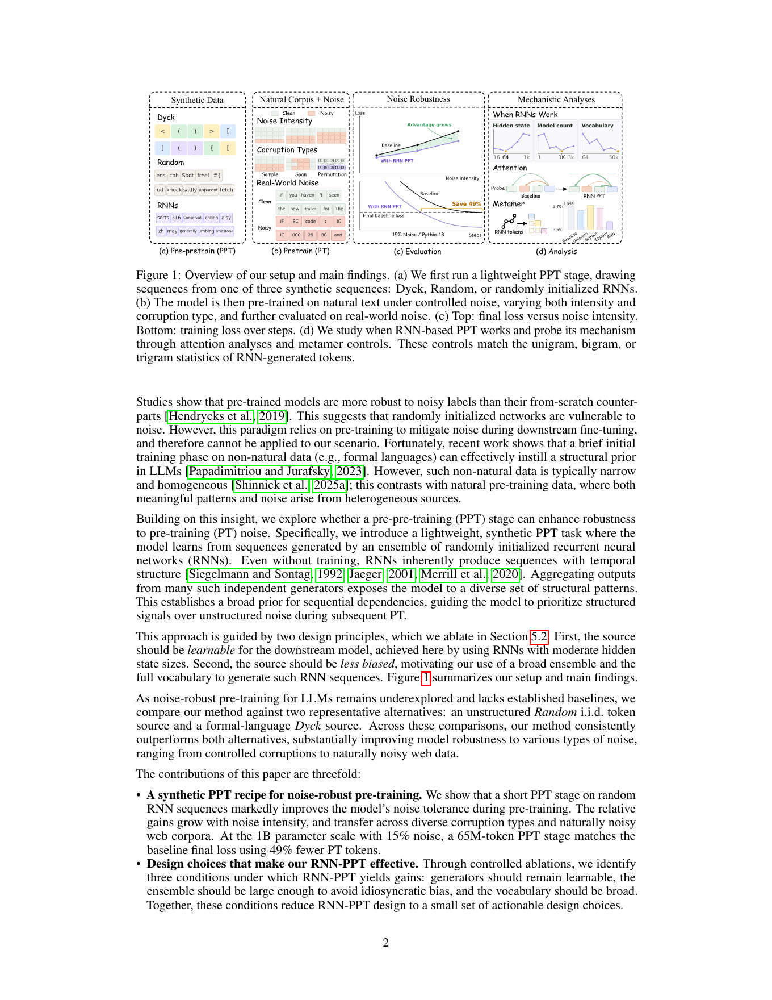
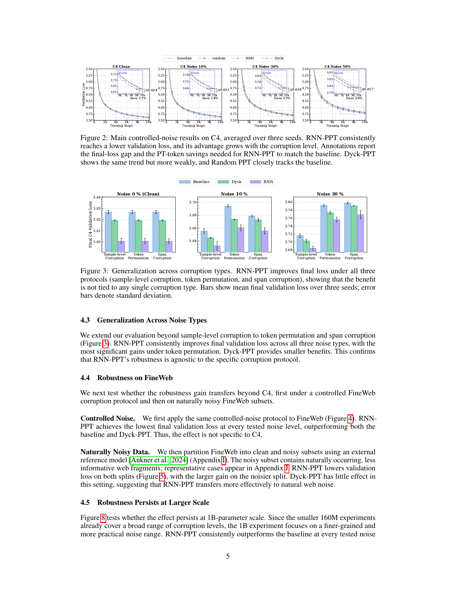
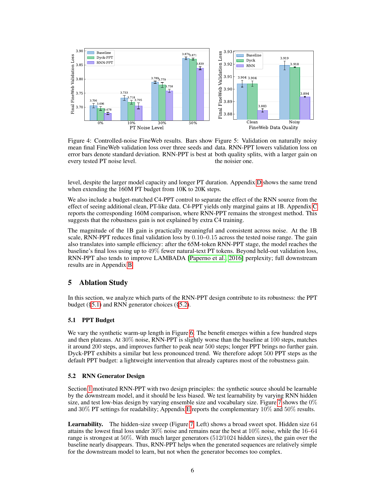
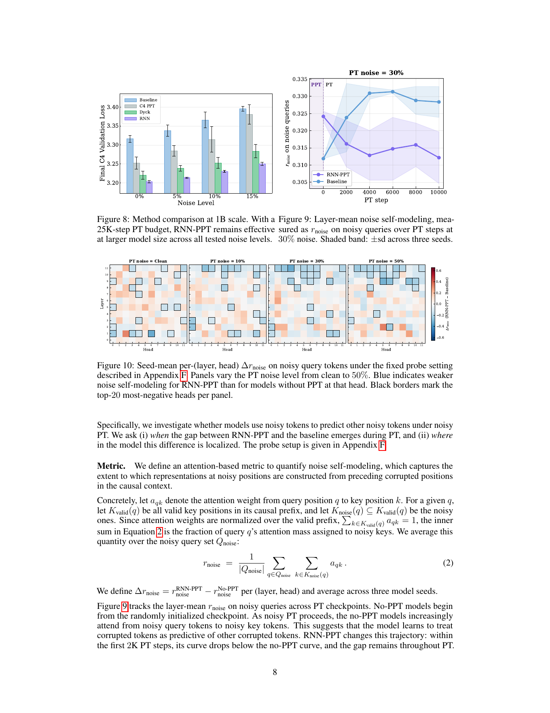

0. 快速读懂
如果只看一句话：模型先在“表面像乱码、内部有可学习时序结构”的 RNN 合成序列上训练几百步，再进入 noisy web corpus 预训练，会更少把噪声本身当作有价值规律来建模。

读这篇论文时最重要的区分：PPT 数据不是知识来源，而是结构预热。它不教模型事实、不教 instruction following，也不替代 C4/FineWeb；它改变的是模型面对 noisy corpus 时的训练倾向。
1. 研究问题
大模型预训练语料来自网页，网页数据不可能完全干净。论文关注的是：当残余噪声不可避免时，能不能让模型本身更抗噪，而不是只靠继续清洗数据。
传统处理对象：corpus
常见 pipeline 会做去重、语言识别、质量打分、模板过滤、毒性过滤、domain sampling 等。问题是过滤有 trade-off：太强会丢 rare knowledge，太弱会留下 boilerplate、广告、目录、格式错误和低质量片段。
本文处理对象：model initialization
作者不修改 PT 数据和训练 recipe，而是在 PT 前插入一个短暂 synthetic PPT 阶段。它问的是：模型不是从完全随机初始化开始接触 noisy corpus，会不会更少走向“拟合噪声”的训练轨迹。
核心风险：next-token prediction 会拟合任何统计模式。网页噪声虽然信息价值低，但常常有局部重复、模板结构和随机片段。如果模型把这些也认真建模，就会浪费容量并损害 clean validation loss。
2. 方法流程
方法本身非常简单：先做短 PPT，再做正常 PT。复杂性不在训练算法，而在 synthetic source 的设计和对机制的解释。
初始化
从随机初始化的 Pythia 架构模型开始，不使用已有语言模型 checkpoint。
PPT
用 RNN / Dyck / Random synthetic source 做普通 next-token prediction。
参数转移
把 PPT 后的模型参数作为正式预训练的初始化。
Noisy PT
在 C4 或 FineWeb 上训练，并注入 sample / token / span 级噪声。
评估
看 clean validation loss、PT-token savings、LAMBADA 和 PIQA。
随机初始化模型 → synthetic PPT：学习非语言但可预测的时序结构 → PPT-initialized model → noisy natural-text PT：在污染语料上继续预训练 → clean validation loss / token savings / downstream checks
| 设置 | 160M main | 1B scale-up | 解释 |
|---|---|---|---|
| PPT steps | 500 | 1000 | PPT 是轻量插入阶段，1B 中约 65M tokens。 |
| PT steps | 10k | 25k | 正式自然文本预训练阶段。 |
| effective batch | 32 | 32 | 配合 sequence length 2048，每步约 65,536 tokens。 |
| optimizer | AdamW | AdamW | PPT 和 PT 是两个独立 optimization runs，各自有 warmup/cosine schedule。 |
3. RNN 合成数据
RNN-PPT 的设计目标是让数据“有结构，但不是自然语言；可学习，但不太窄；表面像噪声，但内部有可预测时序依赖”。
Random PPT
structure-free
每个 token 从 full vocabulary 独立均匀采样。它几乎没有上下文依赖，所以只能测试“多训练一点 / warm-up 一下”是否有效。结果接近 baseline。
Dyck PPT
formal language
使用 k-Shuffle Dyck 括号匹配语言。它有明确长程结构，但结构较窄、较 homogeneous，对真实网页噪声的迁移弱于 RNN-PPT。
RNN PPT
broad sequential prior
从 1000 个随机固定 RNN 中采样序列。每个 generator 是一种“小型随机语言”，ensemble 提供多样时序结构。
生成过程
对每条 synthetic sequence：
选择一个 generator g ~ Uniform({1, ..., M})
初始化 x0 ~ Uniform(vocabulary), h0 = 0
对 t = 1 ... 2048：
h_t = A e_{x_{t-1}} + W h_{t-1} + b
logits_t = C h_t + d
x_t ~ Categorical(softmax(logits_t / τ))
M = 1000
generator 数足够大，减少单一 RNN 的 idiosyncratic bias。
H = 64
hidden size 处在可学习复杂度区间。太大时短 PPT 学不会。
V = 50,304
使用完整 tokenizer vocabulary，避免 narrow token subset 带来的偏置。
4. 噪声构造
论文没有只在一种人工噪声上验证，而是覆盖 sample-level、token permutation、span corruption 和 FineWeb natural-noise split。
| 噪声类型 | 怎么做 | 它模拟什么 | 边界 |
|---|---|---|---|
| Sample-level corruption | 每条训练 sequence 以概率 p 被整段替换成 uniform random tokens。 | 极端低信息样本、随机污染。 | 很可控，但比真实网页噪声更人工。 |
| Token permutation | 把 2048 tokens 切成窗口，在选中窗口内打乱 token 顺序。 | 局部顺序破坏、格式扰动。 | 保留 token 集合，不等价于真实 spam。 |
| Span corruption | 随机选长度 5-20 的 span，用 uniform random tokens 替换。 | 局部乱码、局部污染。 | 仍是 synthetic corruption。 |
| Naturally noisy FineWeb | 用 OpenLLaMA-3B-v2 给 FineWeb 文档打 cross-entropy 分，取 bottom/top third。 | 真实网页中的 boilerplate、目录、广告、低信息片段。 | perplexity split 是 proxy，不是人工质量标注。 |
5. 评估设置
主评估不是聊天能力，而是带噪预训练后，模型对干净自然文本分布的语言建模能力是否更好。
Clean validation loss
训练数据可能带噪，但评估在 clean held-out corpus 上做 next-token cross-entropy。loss 越低，说明模型越能学到可泛化自然语言结构，而不是被训练噪声拖偏。
PT-token savings
如果 baseline 训练到最终 loss 需要 S_base PT steps，而 PPT 方法在 PPT 后只需要 S_match PT steps，则报告 1 - S_match / S_base。
重要口径：49% 是 PT-token savings，不是严格 total-token savings。因为 PPT 成本较小，工程上仍然有意义；但汇报成本时应明确是否把 PPT tokens 算进总预算。
| 补充指标 | 含义 | 在本文中的角色 |
|---|---|---|
| LAMBADA perplexity | 根据长上下文预测 passage 最后一个词，perplexity 越低越好。 | 语言建模补充证据，和主 claim 较一致。 |
| PIQA normalized accuracy | 物理常识二选一，模型给两个候选 completion 打分。 | 弱下游证据，提升较小，不是主 claim 基础。 |
6. 主实验结果
结果主线很清楚：Random PPT 几乎不能解释收益，Dyck PPT 有小收益，RNN-PPT 在 C4、FineWeb、不同噪声类型和 1B scale-up 上最强。

C4 160M final validation loss
| 方法 | 0% | 10% | 30% | 50% | 解释 |
|---|---|---|---|---|---|
| Baseline | 3.627 | 3.659 | 3.719 | 3.818 | 从随机初始化直接 noisy PT。 |
| Random PPT | 3.621 | 3.654 | 3.710 | 3.792 | 有少量 warm-up，但缺少时序结构。 |
| Dyck PPT | 3.619 | 3.645 | 3.703 | 3.798 | 形式语言结构有效，但迁移较弱。 |
| C4 PPT | 3.613 | 3.635 | 3.703 | 3.786 | 先看干净自然语料也有收益，但不如 RNN。 |
| RNN PPT | 3.603 | 3.628 | 3.681 | 3.761 | 全噪声强度最优。 |
C4 160M token savings
| C4 noise | RNN-PPT final loss gap | PT-token savings | 直觉解释 |
|---|---|---|---|
| 0% | 0.024 | 11% | 即使 clean PT，结构预热也能改善早期优化。 |
| 10% | 0.031 | 14% | 噪声出现后，RNN-PPT 优势扩大。 |
| 30% | 0.038 | 15% | 更明显抗噪。 |
| 50% | 0.057 | 20% | 噪声越高，相对收益越大。 |
FineWeb controlled noise
| PT noise | Baseline | Dyck-PPT | RNN-PPT |
|---|---|---|---|
| 0% | 3.706 | 3.696 | 3.678 |
| 10% | 3.733 | 3.718 | 3.705 |
| 30% | 3.789 | 3.779 | 3.758 |
| 50% | 3.874 | 3.871 | 3.839 |
1B scale-up 和 LAMBADA
1B main result
论文报告 RNN-PPT 在 0%、5%、10%、15% 噪声下都优于 baseline。final validation loss 降低约 0.10-0.15，并且最多达到 49% PT-token savings。
1B LAMBADA perplexity
Baseline 在 0/5/10/15% 噪声下是 113.7 / 130.0 / 141.8 / 159.7；RNN-PPT 是 76.5 / 83.1 / 86.6 / 94.2。方向和主指标一致。
7. 消融实验
消融支持两个原则：synthetic source 要可学习，但不能太窄；要有结构，但不能只是低阶 token statistics。

PPT budget
收益在几百步后出现，500 steps 左右基本达到平台。太短学不到结构，太长收益不明显增加。
Hidden size
H=16/32/64 这类中等复杂度最好。H=512/1024 太复杂，短 PPT 学不会，收益消失。
Generator count
1 或 10 个 generator 收益弱，100 起明显变好，1000 左右很强。ensemble 降低单一生成器偏置。
| Metamer source | 0% | 10% | 30% | 50% | 含义 |
|---|---|---|---|---|---|
| Unigram metamer | 0.006 | 0.006 | 0.008 | 0.014 | 只保留单 token 频率，收益很小。 |
| Bigram metamer | -0.002 | 0.002 | -0.011 | -0.001 | 局部二元统计不足以解释收益。 |
| Trigram metamer | 0.002 | 0.003 | 0.004 | 0.005 | 三元统计也不够。 |
| RNN subset | 0.026 | 0.029 | 0.036 | 0.052 | 长程时序组织才是关键。 |
8. 机制分析
论文最好的解释不是“模型直接学会忽略噪声”，而是“PPT 让模型在 noisy PT 中逐渐减少 noise-to-noise attention”。

Noise self-modeling 指标
对每个 noisy query token，统计它在 causal prefix 中分配给 noisy key tokens 的 attention mass，然后对所有 noisy query 平均。这个值越高，说明模型越倾向于用前面的噪声 token 来处理当前噪声 token。
r_noise = average over noisy query positions q:
sum of attention weight from q to noisy key positions
Δr_noise = r_noise(RNN-PPT) - r_noise(No-PPT)
如果 Δr_noise < 0：
RNN-PPT 比 no-PPT 更少做 noise-to-noise attention。
关键观察：RNN-PPT 不是在 PT 开始前就天然 suppress noise。差异是在 noisy PT 的前几千步中发展出来的：no-PPT 模型越来越 attend noisy tokens，RNN-PPT 曲线则下降并保持更低。
我的判断：attention probe 是有说服力的诊断，但还不是完整因果证明。更强的后续证据应该包括 head ablation、activation patching，或训练中直接干预 noisy-token attention。
9. 我的 insight
这篇论文最有价值的地方，是把 synthetic data 从“内容补充”重新定位为“优化轨迹塑形工具”。
数据清洗解决“给模型看什么”；RNN-PPT 解决“模型以什么状态开始看”。这两个方向不是替代关系，而是互补关系。
为什么这个 idea 漂亮
它没有依赖昂贵标注、没有引入复杂 loss、没有修改 PT pipeline。它只是用一个低成本 synthetic stage 改变模型的初始化和早期优化轨迹。如果这个现象 scale 到更大模型，工程价值会很直接。
为什么还不能过度外推
1B 和 25k PT steps 仍然远小于真实 frontier pretraining。真实训练混合数据、去重、采样权重、domain balance 和 tokenizer 细节都可能改变效果。
我会如何把它变成工程实验
最小验证实验： 1. 固定一个小模型和真实 noisy corpus。 2. 跑 no-PPT、Random-PPT、RNN-PPT、clean-data-PPT 四组。 3. 统一 PT recipe，只改 initialization。 4. 看 clean validation loss curve，不只看 final downstream。 5. 同时报告 PT-token savings 和 total-token savings。 6. 如果小规模稳定，再扩到更大模型和更真实的 data mixture。
10. 局限和后续
这是一篇 strong empirical signal paper，而不是最终 scaling law paper。它提出了值得认真试的训练前干预，但还需要更大规模、更真实 pipeline 和更强机制验证。
| 局限 | 为什么重要 | 我希望看到的后续 |
|---|---|---|
| scale 只有 1B | 真实大模型训练中优化动态、数据混合和容量分配会变化。 | 3B/7B/13B 以上，甚至更长 token budget 的 scaling study。 |
| 真实噪声 proxy 有限 | FineWeb perplexity split 不能覆盖所有网页噪声类型。 | 接入真实 curation pipeline 前后的多 domain mixture。 |
| source selection 成本高 | 每种 synthetic source 都要完整跑 PPT-to-PT pipeline。 | 找可预测 source 有效性的统计：learnability、long-range mutual information、entropy profile。 |
| 机制还不是因果证明 | attention pattern 与 loss 改善相关，但不是充分因果链。 | head ablation、activation patching、attention intervention。 |
| 只测试 RNN family | 不知道真正关键的是 recurrence、latent state、长程依赖还是 ensemble diversity。 | 比较 LSTM、GRU、SSM、HMM、PCFG、cellular automata 和 procedural data。 |
最终判断：这篇论文的实践价值在于提供了一个低成本候选 curriculum/initialization trick。它不该被当成数据清洗替代品，但很适合作为正式大训练前的小规模预实验：如果 token-to-loss curve 稳定改善，再考虑放大。